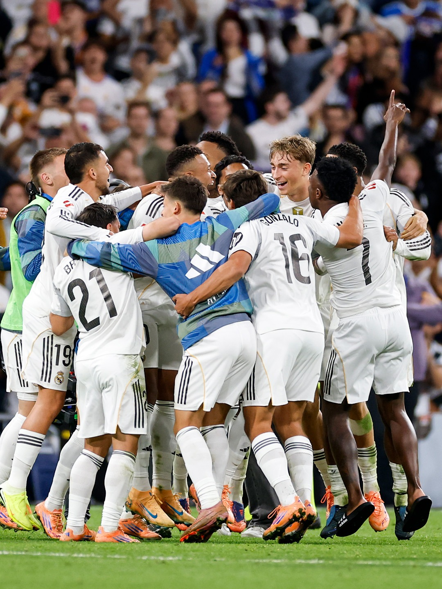

Real Madrid Football Club
The feeling of having stars in their team and wanting to fight every trophy in Spain
Being a Real Madrid fan comes with the thrilling feeling of supporting a club built on excellence, history, and ambition. The team is known for having some of the biggest stars in world football from legends like Cristiano Ronaldo, Zidane, and Ramos to modern icons like Vinícius Jr., Bellingham, Kylian Mbappe, and Modrić. Watching them play feels like watching football royalty, with every match carrying the weight of tradition and expectation. Real Madrid’s mentality is not just about winning; it’s about dominating every competition; La Liga, Copa del Rey, and especially the Champions League. The feeling of seeing world-class players unite with one goal, to fight for every trophy in Spain and beyond, gives fans a deep sense of pride and excitement. Supporting Real Madrid means believing in greatness, never giving up, and embracing the pressure that comes with being part of the most successful football club in the world.